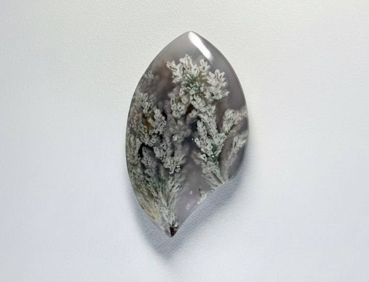
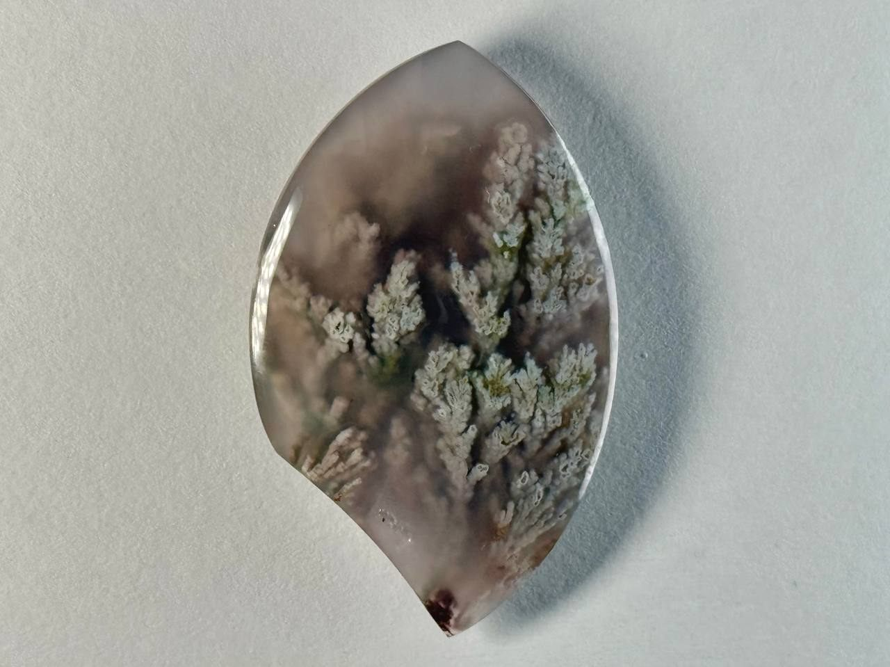
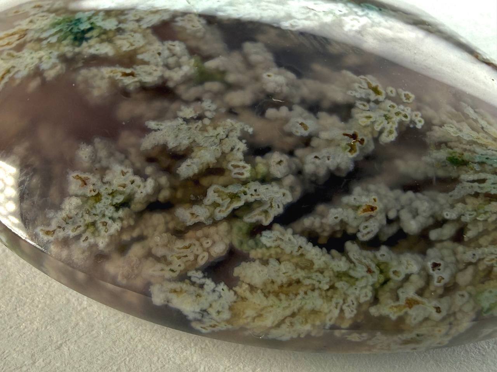
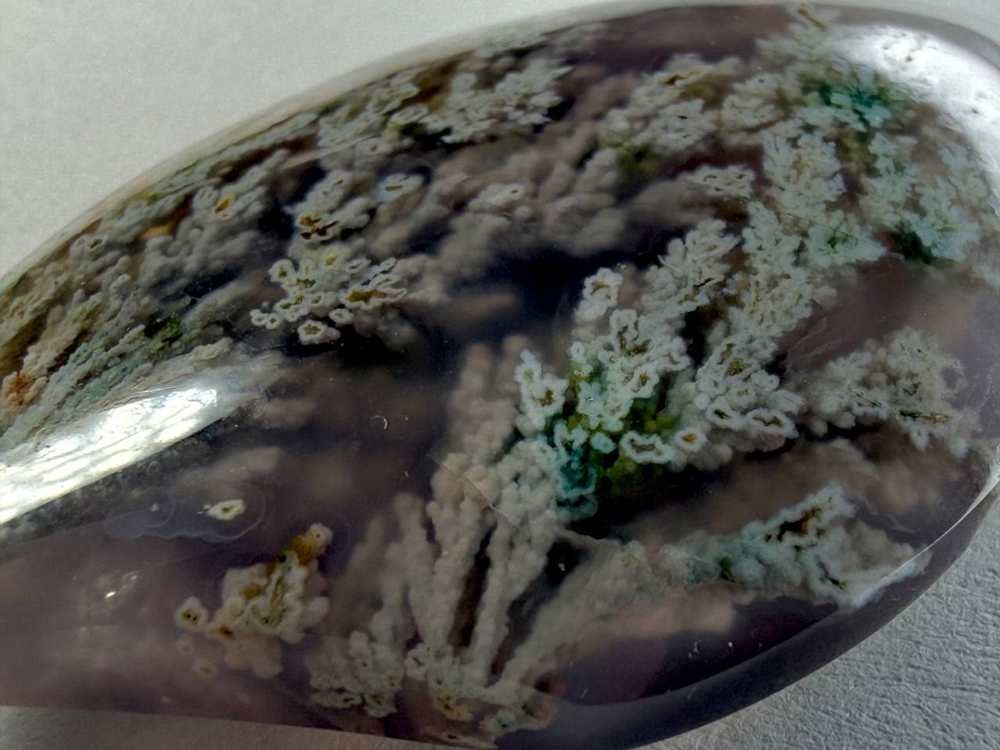
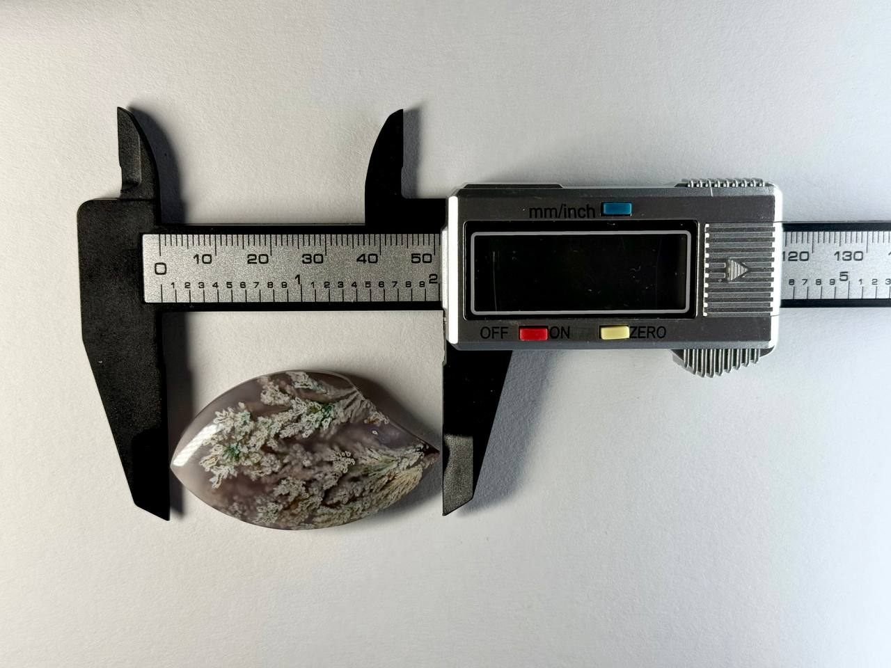

Winter Branch Bloom is a dendritic agate that looks like a moment of winter held in stone. Soft white branches rise through a grey-lavender mist, like frost-covered blossoms in early morning light. Every line and cluster formed naturally over years, creating the feeling of a quiet, frozen garden beneath the surface. A calm, delicate piece that rewards a second and third look as new details appear.




